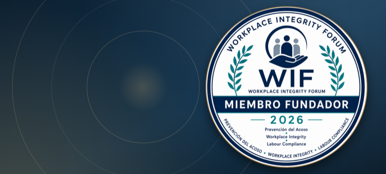
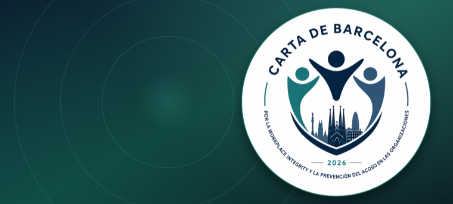
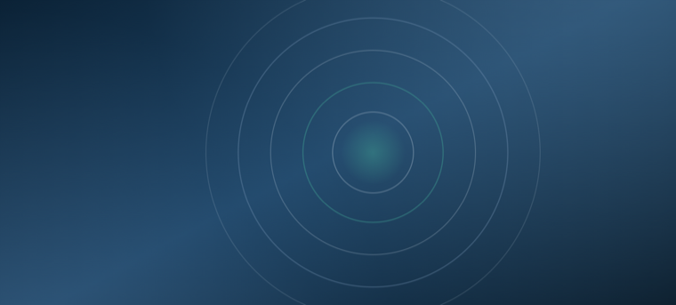

i
Prevención del Acoso
Conocimiento, buenas prácticas y cooperación entre organizaciones para prevenir el acoso en todas sus formas.
Workplace Integrity Forum
Prevención del Acoso · Workplace Integrity · Labour Compliance
Una comunidad de organizaciones, universidades y personas expertas que impulsan entornos laborales seguros, respetuosos y responsables.
Una visión compartida
Las organizaciones tienen un papel esencial en la protección de las personas. Construir entornos seguros es una responsabilidad compartida.
WIF nace para crear un espacio permanente de encuentro, diálogo y colaboración que fortalezca la prevención del acoso y promueva una cultura de integridad y cumplimiento.
Reúne a entidades públicas y privadas que comparten un mismo compromiso: proteger eficazmente la dignidad de las personas.
Conocimiento, buenas prácticas y cooperación entre organizaciones para prevenir el acoso en todas sus formas.
Fortalecer la capacidad real de las organizaciones para proteger la dignidad de las personas.
Sistemas de gestión que ayudan a prevenir riesgos y a actuar de forma responsable.

Membresía fundacionalLas organizaciones que acompañan el nacimiento de WIF y serán reconocidas como fundadoras.
Más información →
Declaración de principiosUn compromiso público con la protección de la dignidad humana en el trabajo.
Más información →
Noviembre 2026El encuentro anual de referencia para compartir conocimiento y experiencias.
Más información →Empresas, administraciones y entidades sociales.
Conocimiento académico y profesional.
Compliance, igualdad, jurídico y recursos humanos.
Súmate a la comunidad que sitúa la dignidad humana en el centro de la vida organizacional.
Una iniciativa de